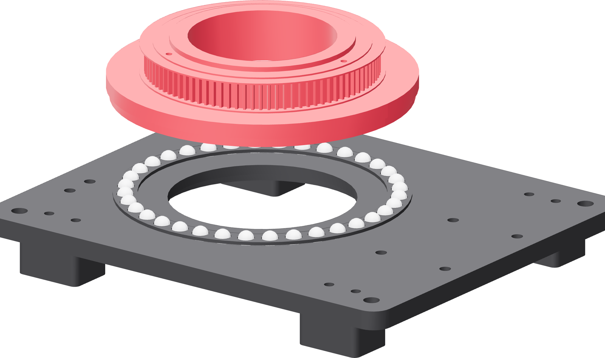

The turntable down
Straight down onto the loaded race, level, with the ring's groove finding the balls all the way round at once.

- Pick the turntable up by its rim with both hands, ring downward.
- Bring it over the base and align the ring's circle with the ball circle by eye.
- Lower it level and let it settle on its own weight. Do not press.
- Look round the joint. The ring's groove should sit on the balls with an even gap to the base all the way round.
- Turn the platter slowly by hand, one complete revolution, then back.
Gate — it turns free and quiet
One revolution each way with a fingertip's push and no binding, no grinding, no catching at any one angle. A regular catch once per revolution is a ball, a proud screw, or a burr in a groove — lift the platter and find it.